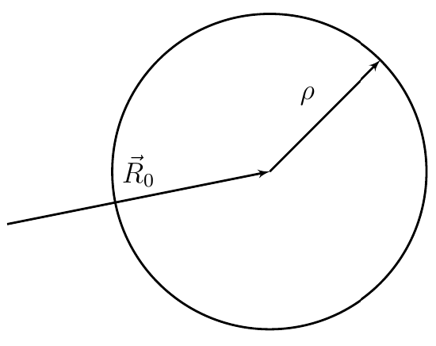
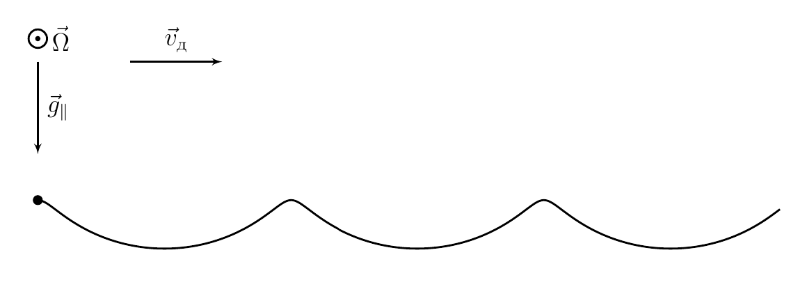
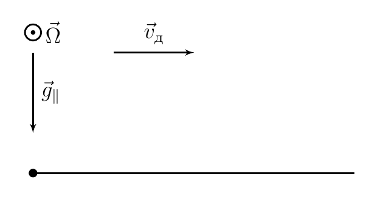
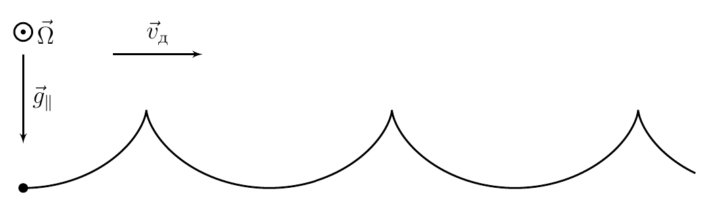
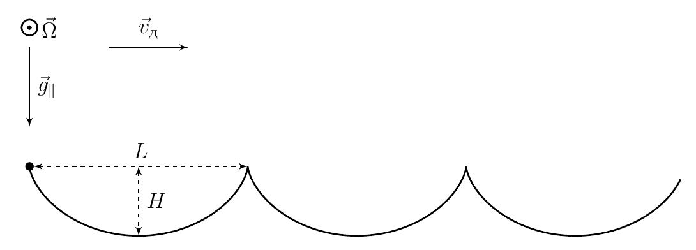
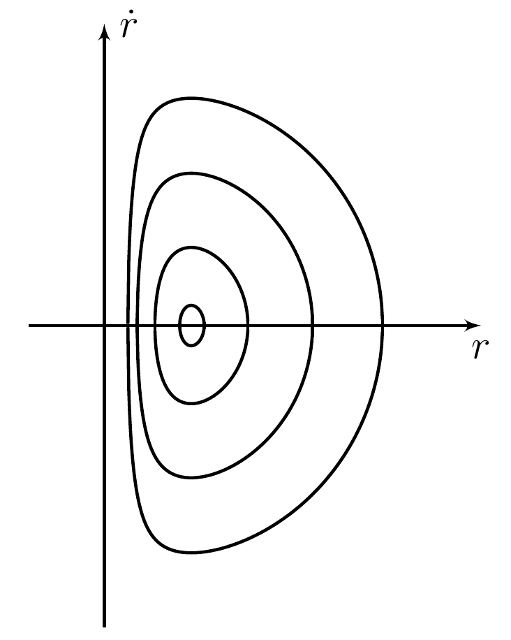
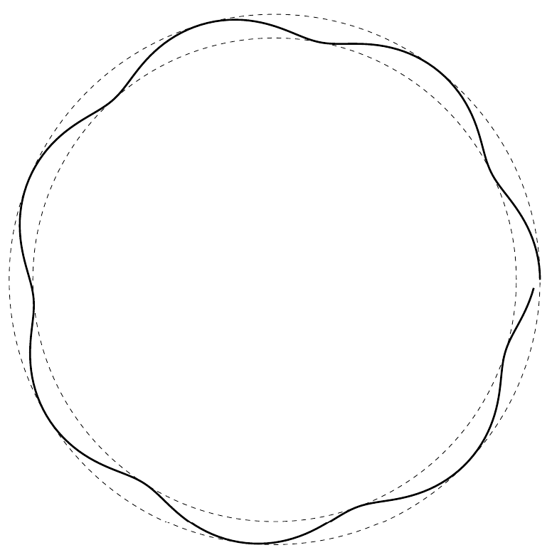

Y25 (2025) — English translation
Let's write down Newton's second law: $$m\ddot{\vec r} = m\vec g + \vec N + \vec F.$$Ball/Sphere не движется в вертикальном направлении, therefore $m\vec g + \vec N = 0$. We get:
The second answer follows from the law of change in angular momentum relative to the center of the ball:
The velocities of the table and the ball at the point of their contact must match, therefore:
Let's express $\vec F$ from the equation by $\dot{\vec\omega}$, multiplying it vectorially by $\vec a$: $$\beta m a^2 \left[\dot{\vec \omega},\vec a\right] = \left[ \left[\vec a, \vec F\right],\vec a\right] = \left[\vec a, \left[\vec F, \vec a\right]\right] = a^2\vec F.$$$$\vec F = \beta m\left[\dot{\vec \omega},\vec a\right].$$Let us express via/through заданные величины, продифференцировав кинематическую relation: $$\left[\vec\Omega,\dot{\vec r}\right]=\ddot{\vec r} + \left[\dot{\vec\omega},\vec a\right].$$$$\vec F = \beta m\left[\dot{\vec \omega},\vec a\right] = \beta m\left(\left[\vec\Omega,\dot{\vec r}\right]-\ddot{\vec r}\right).$$Substitute the resulting expression and get the answer:
Note that the expression obtained in the previous paragraph is the equality of two total derivatives with respect to time: $$\frac{\text{d}}{\text{d}t}\dot{\vec r} =\frac{\text{d}}{\text{d}t} \frac{\beta}{1+\beta} \left[\vec\Omega, \vec r\right].$$Having integrated это соratio taking into account того, что velocity центра ball/sphereа всегда vaporаллельна плоскости стола: $$\dot{\vec r} = \frac{\beta}{1+\beta} \left[\vec\Omega, \vec r - \vec R_0\right],$$where $\vec R_0$ - постоянный vector. Note that это equation заgives движение по окружности с центром $\vec R_0$. Now let's substitute the initial conditions. Then integrating the acceleration will give us:
As we have already seen, the trajectory is a circle. All that remains is to find its center and radius. $$\dot{\vec r} = \frac{\beta}{1+\beta} \left[\vec\Omega, \vec r - \vec R_0\right] = \frac{\beta}{1+\beta} \left[\vec\Omega, \vec r - \vec r_0\right] + \vec v_0$$Домножим vectorно на $\vec\Omega$: $$\frac{\beta}{1+\beta} \left[\vec\Omega,\left[\vec\Omega, \vec r - \vec R_0\right]\right] = \frac{\beta}{1+\beta} \left[\vec\Omega,\left[\vec\Omega, \vec r - \vec r_0\right]\right] + \left[\vec\Omega,\vec v_0\right].$$$$\frac{\beta}{1+\beta} \left[\vec\Omega,\left[\vec\Omega, \vec r_0 - \vec R_0\right]\right] = \frac{\beta\Omega^2}{1+\beta}\left(\vec R_0 - \vec r_0\right)= \left[\vec\Omega,\vec v_0\right]$$$$\vec R_0 - \vec r_0=\frac{1+\beta}{\Omega^2\beta} \left[\vec\Omega,\vec v_0\right]$$From поrayенного соотношения ссу we get центр and radius окружности: $$\vec R_0 = \vec r_0+\frac{1+\beta}{\Omega^2\beta} \left[\vec\Omega,\vec v_0\right],\qquad \rho = \frac{\left(1+\beta\right)v_0}{\Omega\beta}.$$

The only difference from the previous part is that in the initial expression for $\ddot{\vec r}$ there will be a non-zero contribution $m\vec g + \vec N = m\vec g_\parallel$. $$\ddot{\vec r} = \vec g_\parallel+\beta\left(\left[\vec\Omega,\dot{\vec r}\right]-\ddot{\vec r}\right)$$
For case 4, numerically calculate the characteristic dimensions of the trajectory for $g_\parallel=1.0~m/s^2$, $\Omega = 10~\mathrm{rad}/с$.
Let's analyze the answer from the previous paragraph. Acceleration consists of a constant term and a term obtained by the vector product of speed and a constant vector. This is completely analogous to movement in a crossed magnetic and electric field. Let's find the drift speed $\dot{\vec r} = \vec v + \vec v_д$. $$ \dot{\vec v} = \frac{\vec g_\parallel}{1+\beta}+\frac{\beta}{1+\beta}\left[\vec\Omega,\vec v\right]+\frac{\beta}{1+\beta}\left[\vec\Omega,\vec v_д\right] $$$$ 0 = \frac{\vec g_\parallel}{1+\beta}+\frac{\beta}{1+\beta}\left[\vec\Omega,\vec v_д\right] $$Vectorно домножив на $\vec\Omega$, we get value скорости дрейфа: $$ \vec v_д = \frac{\left[\vec \Omega, \vec g_\parallel\right]}{\Omega^2\beta} = \frac{5}{2}\vec u. $$Vector $\vec v$ вращается с постоянной угловой velocityю $\beta \vec\Omega/(1+\beta)$. Using the obtained expressions, we obtain the form of the trajectory for each case.




From Newton's second law: $$ \ddot{\vec r} = \frac{\vec N}{m} + \vec g + \frac{\vec F}{m}. $$From the law изменения momentа momentumа: $$ m a^2 \beta \dot{\vec \omega} = \left[\vec a \times \vec F\right] \quad \Rightarrow \quad ma^2 \beta \left[\vec a \times \dot{\vec \omega}\right] = \left[\vec a \times \left[\vec a \times \vec F\right]\right] = \vec a \left(\vec a \cdot \vec F\right) - \vec F a^2 = - \vec F a^2. $$From:
The velocities of the table and the ball at the point of their contact must coincide, therefore: $$ \dot{\vec r} + \left[\vec \omega \times \vec a\right] = \left[\vec \Omega \times \left(\vec r + \vec a\right)\right], $$from:
Let us differentiate the expression for $\dot{\vec r}$ with respect to time: $$ \ddot{\vec r} = \left[\vec \Omega \times \dot{\vec r}\right] + \left[\vec \Omega \times \dot{\vec a}\right] - [\dot{\vec \omega} \times \vec a] - [\vec \omega \times \dot{\vec a}] $$ From выражения for $\ddot{\vec r}$, поrayенного в partе C1 : $$ [\dot{\vec \omega} \times \vec a] = \frac{1}{\beta} \left(\ddot{\vec r} - \frac{\vec N}{m} - \vec g\right) $$ Also: $$ \dot{\vec a} = \left[\vec \zeta \times \vec a\right], $$ from where:
Let's see how this formula is transformed taking into account some approximations, namely: $\theta \ll 1$, that is, the table is slightly different from a flat one and the influence of gravity is weak; the motion of the ball is finite, that is, it moves in a limited region of space near the vertex and does not move away to infinity; $a \lesssim r$, that is, the ball is not too close to the top of the cone; $\zeta \lesssim \Omega$, that is, the rotation of the table occurs quite quickly in comparison with the speed of the ball; $\left|\left(\vec\omega, \vec a\right) \right|\lesssim \Omega r$, that is, the spinning speed is not too high. Let us restrict ourselves to terms of order of smallness $\theta$. Note that the terms with $\vec N$ and $\vec g$ have the order of smallness $\theta$, since the projection $\vec g$ onto the surface of the cone is of this order. Due to the fact that the motion is finite, the remaining terms must be of the same order. Now it remains to show that the first term is an order of magnitude larger than the last, then the first is of the first order of smallness, and the last is of the second, and it can be discarded. Estimation of the value of the first term: $$\left|\beta\frac{[\vec \Omega, \dot{\vec r}]}{1 + \beta}\right|\sim \left|[\vec \Omega, \dot{\vec r}]\right|\sim \Omega \dot r + \Omega \zeta r.$$ Теперь последнее term expanding на два слагаемых and проаналfromandруем каждое from них taking into account того, что angle между $\vec\zeta$ and $\vec a$ equals $\theta$: $$\left|\frac{\beta}{1 + \beta}\left[\vec \Omega, \left[\vec \zeta, \vec a\right]\right]\right|\sim\Omega\zeta a\theta \lesssim \Omega\zeta r\theta \ll \Omega\zeta r \lesssim \left|\beta\frac{[\vec \Omega, \dot{\vec r}]}{1 + \beta}\right|.$$ For оценки второго слагаемого expanding $\vec\omega$ на компоненты вдоль and перпендикулярно $\vec a$: $\vec \omega = \vec \omega_a + \vec \omega_\perp$. Note that from кинетической связи and последнего условия for/atближения: $$\omega a \lesssim \left|\dot{\vec r}\right|+\Omega r +\left|\left(\vec\omega, \vec a\right) \right|\sim \dot r + \Omega r.$$ Thus последнее expression, малость которого надо доказать: $$\left|\frac{\beta}{1 + \beta}\left[\vec \omega, \left[\vec \zeta, \vec a\right]\right]\right|\sim\omega\zeta a\theta \lesssim \left(\dot r + \Omega r\right)\zeta \theta \ll \Omega \dot r + \Omega \zeta r\sim \left|\beta\frac{[\vec \Omega, \dot{\vec r}]}{1 + \beta}\right|.$$ Thus, we obtain the desired approximate formula.
Let us restrict ourselves to terms of order of smallness $\theta$.
Note that the terms with $\vec N$ and $\vec g$ have the order of smallness $\theta$, since the projection $\vec g$ onto the surface of the cone is of this order. Due to the fact that the motion is finite, the remaining terms must be of the same order. Now it remains to show that the first term is an order of magnitude larger than the last, then the first is of the first order of smallness, and the last is of the second, and it can be discarded.
Estimation of the value of the first term:
$$\left|\beta\frac{[\vec \Omega, \dot{\vec r}]}{1 + \beta}\right|\sim \left|[\vec \Omega, \dot{\vec r}]\right|\sim \Omega \dot r + \Omega \zeta r.$$
Now let’s decompose the last term into two terms and analyze each of them, taking into account the fact that the angle between $\vec\zeta$ and $\vec a$ is equal to $\theta$:
$$\left|\frac{\beta}{1 + \beta}\left[\vec \Omega, \left[\vec \zeta, \vec a\right]\right]\right|\sim\Omega\zeta a\theta \lesssim \Omega\zeta r\theta \ll \Omega\zeta r \lesssim \left|\beta\frac{[\vec \Omega, \dot{\vec r}]}{1 + \beta}\right|.$$
To estimate the second term, we decompose $\vec\omega$ into components along and perpendicular to $\vec a$: $\vec \omega = \vec \omega_a + \vec \omega_\perp$. Note that from the kinetic connection and the last approximation condition:
$$\omega a \lesssim \left|\dot{\vec r}\right|+\Omega r +\left|\left(\vec\omega, \vec a\right) \right|\sim \dot r + \Omega r.$$
Thus, the last expression, the smallness of which must be proven:
$$\left|\frac{\beta}{1 + \beta}\left[\vec \omega, \left[\vec \zeta, \vec a\right]\right]\right|\sim\omega\zeta a\theta \lesssim \left(\dot r + \Omega r\right)\zeta \theta \ll \Omega \dot r + \Omega \zeta r\sim \left|\beta\frac{[\vec \Omega, \dot{\vec r}]}{1 + \beta}\right|.$$
Thus we obtain the desired approximate formula.
First decision. Let us expand the terms from this equation according to the introduced basis: $$ \dot{\vec r} = \left[\vec \zeta \times \vec r\right] + \dot r \vec e_r = \zeta r \vec e_\varphi + \dot r \vec e_r $$ $$ \ddot{\vec r} = \left( \dot \zeta r \vec e_\varphi + \zeta \dot r \vec e_\varphi + \zeta r \frac{\text{d} \vec e_\varphi}{\text{d} t} \right) + \left( \ddot r \vec e_r + \dot r \frac{\text{d} \vec e_r}{\text{d} t} \right) =\\= \dot \zeta r \vec e_\varphi + \zeta \dot r \vec e_\varphi + \zeta^2 r \left(-\vec e_r - \theta \vec e_z\right) + \ddot r \vec e_r + \zeta \dot r \vec e_\varphi = \left(\dot \zeta r + 2 \zeta \dot r\right) \vec e_\varphi + \left(\ddot r - \zeta^2 r\right) \vec e_r + \zeta^2 r \theta \vec e_z $$ $$ \left[\vec \Omega \times \dot{\vec r}\right] = \Omega \dot r \vec e_\varphi - \Omega \zeta r \vec e_r + \Omega \zeta r \theta \vec e_z $$ $$ \frac{\vec N}{m} + \vec g = g \theta \vec e_r + \left( \frac{N_z}{m} - g \right) \vec e_z $$ Теперь substituting их в данное equation, взяв проекции на $\vec e_\varphi$: $$ \dot \zeta r + 2 \zeta \dot r = \frac{\Omega \dot r}{1 + \beta^{-1}} \quad \Rightarrow \quad \frac{\text d \zeta}{\text d r} = \frac{1}{r} \left( \frac{\Omega}{1 + \beta^{-1}} - 2 \zeta \right) \quad \Rightarrow\\ \int \frac{\text d \zeta}{\dfrac{\Omega}{1 + \beta^{-1}} - 2 \zeta} = \int \frac{\text d r}{r} \quad \Rightarrow \quad r^2 \left( \zeta-\cfrac{\Omega\beta}{2\left(1+\beta\right)} \right) = \text{const}, $$ which is what needed to be proved.
Let us expand the terms from this equation according to the introduced basis: $$ \dot{\vec r} = \left[\vec \zeta \times \vec r\right] + \dot r \vec e_r = \zeta r \vec e_\varphi + \dot r \vec e_r $$ $$ \ddot{\vec r} = \left( \dot \zeta r \vec e_\varphi + \zeta \dot r \vec e_\varphi + \zeta r \frac{\text{d} \vec e_\varphi}{\text{d} t} \right) + \left( \ddot r \vec e_r + \dot r \frac{\text{d} \vec e_r}{\text{d} t} \right) =\\= \dot \zeta r \vec e_\varphi + \zeta \dot r \vec e_\varphi + \zeta^2 r \left(-\vec e_r - \theta \vec e_z\right) + \ddot r \vec e_r + \zeta \dot r \vec e_\varphi = \left(\dot \zeta r + 2 \zeta \dot r\right) \vec e_\varphi + \left(\ddot r - \zeta^2 r\right) \vec e_r + \zeta^2 r \theta \vec e_z $$ $$ \left[\vec \Omega \times \dot{\vec r}\right] = \Omega \dot r \vec e_\varphi - \Omega \zeta r \vec e_r + \Omega \zeta r \theta \vec e_z $$ $$ \frac{\vec N}{m} + \vec g = g \theta \vec e_r + \left( \frac{N_z}{m} - g \right) \vec e_z $$ Теперь substituting их в данное equation, взяв проекции на $\vec e_\varphi$: $$ \dot \zeta r + 2 \zeta \dot r = \frac{\Omega \dot r}{1 + \beta^{-1}} \quad \Rightarrow \quad \frac{\text d \zeta}{\text d r} = \frac{1}{r} \left( \frac{\Omega}{1 + \beta^{-1}} - 2 \zeta \right) \quad \Rightarrow\\ \int \frac{\text d \zeta}{\dfrac{\Omega}{1 + \beta^{-1}} - 2 \zeta} = \int \frac{\text d r}{r} \quad \Rightarrow \quad r^2 \left( \zeta-\cfrac{\Omega\beta}{2\left(1+\beta\right)} \right) = \text{const}, $$ which is what needed to be proved.
Second solution. Let's consider the change in the angular momentum of the center of mass: $$\frac{\text{d}}{\text{d}t}\left[\vec r, \dot{\vec r}\right] = \left[\vec r, \ddot{\vec r}\right].$$ For проекции на ось $z$: $$\frac{\text{d}}{\text{d}t}\left(\vec e_z, \vec r, \dot{\vec r}\right) = \frac{\text{d}}{\text{d}t}\left(r^2\zeta\right) = \left(\vec e_z, \vec r, \ddot{\vec r}\right).$$ Note that $\left(\vec e_z, \vec r, \vec N\right)$ and $\left(\vec e_z, \vec r, \vec g\right)$ equal нулю, since эти тройки vectorов лежат в одной плоскости, therefore от ускорения останется только одно term: $$\frac{\text{d}}{\text{d}t}\left(r^2\zeta\right) = \frac{\beta}{1+\beta} \left(\vec e_z, \vec r, [\vec \Omega, \dot{\vec r}]\right) = \frac{\beta}{1+\beta} \left(\vec e_z, \vec\Omega\left(\vec r,\dot{\vec r}\right) - \dot{\vec r} \left(\vec\Omega, \vec r\right)\right).$$ $$\frac{\text{d}}{\text{d}t}\left(r^2\zeta\right) = \frac{\beta}{1+\beta} \left(\left(\vec e_z, \vec\Omega\right)\left(\vec r,\dot{\vec r}\right) - \left(\vec e_z,\dot{\vec r}\right) \left(\vec\Omega, \vec r\right)\right)$$ Substituting значения скальных произведений and отбросим terms второго порядка малости: $$\frac{\text{d}}{\text{d}t}\left(r^2\zeta\right) = \frac{\beta}{1+\beta} \left(\Omega\frac{\text{d}}{\text{d}t}\left(\frac{r^2}{2}\right) - r\dot{r}\Omega \theta^2\right) \approx \frac{\beta\Omega}{1+\beta}\frac{\text{d}}{\text{d}t}\left(\frac{r^2}{2}\right) .$$ $$\frac{\text{d}}{\text{d}t}\left(r^2 \left( \zeta-\cfrac{\Omega\beta}{2\left(1+\beta\right)} \right)\right) = 0$$ Поrayandли, что quantity $l$ is saved.
Let's consider the change in the angular momentum of the center of mass:
$$\frac{\text{d}}{\text{d}t}\left[\vec r, \dot{\vec r}\right] = \left[\vec r, \ddot{\vec r}\right].$$
For projection onto the $z$ axis:
$$\frac{\text{d}}{\text{d}t}\left(\vec e_z, \vec r, \dot{\vec r}\right) = \frac{\text{d}}{\text{d}t}\left(r^2\zeta\right) = \left(\vec e_z, \vec r, \ddot{\vec r}\right).$$
Note that $\left(\vec e_z, \vec r, \vec N\right)$ and $\left(\vec e_z, \vec r, \vec g\right)$ are equal to zero, since these triples of vectors lie in the same plane, so only one term will remain from the acceleration:
$$\frac{\text{d}}{\text{d}t}\left(r^2\zeta\right) = \frac{\beta}{1+\beta} \left(\vec e_z, \vec r, [\vec \Omega, \dot{\vec r}]\right) = \frac{\beta}{1+\beta} \left(\vec e_z, \vec\Omega\left(\vec r,\dot{\vec r}\right) - \dot{\vec r} \left(\vec\Omega, \vec r\right)\right).$$
$$\frac{\text{d}}{\text{d}t}\left(r^2\zeta\right) = \frac{\beta}{1+\beta} \left(\left(\vec e_z, \vec\Omega\right)\left(\vec r,\dot{\vec r}\right) - \left(\vec e_z,\dot{\vec r}\right) \left(\vec\Omega, \vec r\right)\right)$$
Let us substitute the values of the rock products and discard the terms of the second order of smallness:
$$\frac{\text{d}}{\text{d}t}\left(r^2\zeta\right) = \frac{\beta}{1+\beta} \left(\Omega\frac{\text{d}}{\text{d}t}\left(\frac{r^2}{2}\right) - r\dot{r}\Omega \theta^2\right) \approx \frac{\beta\Omega}{1+\beta}\frac{\text{d}}{\text{d}t}\left(\frac{r^2}{2}\right) .$$
$$\frac{\text{d}}{\text{d}t}\left(r^2 \left( \zeta-\cfrac{\Omega\beta}{2\left(1+\beta\right)} \right)\right) = 0$$
We found that the value $l$ is preserved.
Now consider the equation: $$ \ddot{\vec r} = \frac{1}{1+\beta} \left(\vec g + \frac{\vec N}{m}\right) + \frac{\beta\left[\vec \Omega \times \dot{\vec r}\right]}{1 + \beta}. $$Substituting в него проекции слагаемых на $\vec e_r$: $$ \ddot r - \zeta^2 r = \frac{g \theta}{1 + \beta} - \frac{\beta \Omega \zeta r}{1 + \beta} \quad \Rightarrow \quad \ddot r = \zeta^2 r + \frac{g \theta}{1 + \beta} - \frac{\beta \Omega \zeta r}{1 + \beta}. $$
$$ r = \text{const} \quad \Rightarrow \quad \ddot r = 0 = \zeta^2 r + \frac{g \theta}{1 + \beta} - \frac{\beta \Omega \zeta r}{1 + \beta}. $$Then we get квадратное equation отноительно $\zeta$: $$ \zeta^2 - \zeta \cdot \frac{\Omega}{1 + \beta^{-1}} + \frac{g \theta}{(1 + \beta) r} = 0 \quad \Rightarrow \quad \zeta_{1,2} = \frac{\Omega}{2(1 + \beta^{-1})} \pm \sqrt{\left(\frac{\Omega}{2(1 + \beta^{-1})}\right)^2 - \frac{g \theta}{(1 + \beta) r}}. $$Since подкоренное expression не отрицательно: $$ r \ge \frac{4 g \theta (1 + \beta)}{\Omega^2 \beta^2} = r_{\min}. $$
It is easy to see that: $$ \ddot r = \frac{\text d \dot r}{\text d t} = \frac{\text d \dot r}{\text d r / \dot r} = \frac{\text d ({\dot r}^2)}{2 \text d r} \quad \Rightarrow \quad {\dot r}^2 = 2 \int \ddot r(r) \text d r. $$Мы знаем, что сохраняется quantity $l$, consequently: $$ \zeta (r) = \frac{\Omega\beta}{2\left(1+\beta\right)} + \frac{l}{r^2}. $$Substituting $\zeta$ в expression for $\ddot r$, we get: $$ {\dot r}^2 = 2 \int \left( \frac{g \theta}{1 + \beta} + \frac{l^2}{r^3} - \frac{\Omega^2 r}{4 (1 + \beta^{-1})^2} \right) \text d r = \frac{2 g \theta r}{1 + \beta} - \frac{\Omega^2 r^2}{4 (1 + \beta^{-1})^2} - \frac{l^2}{r^2} + \text{const}. $$

The orbit was disturbed so that the distance from the axis to the center of the ball was presented in the form: $$ r(t) = r_0 + \delta (t), ~(\text{gде } \delta \ll r_0 \text{ и } \left< r \right> = r_0). $$Then: $$ \ddot \delta = - \xi^2 \delta = \ddot r(r_0) = \frac{2g\theta}{1 + \beta} + \frac{l^2}{r^3} - \frac{\Omega^2 r}{4 (1 + \beta^{-1})^2} \approx - \frac{3 l^2 \delta}{r_0^4} - \frac{\Omega^2 \delta}{4 (1 + \beta^{-1})^2}, $$hence: $$ \xi = \sqrt{\frac{3 l^2}{r_0^4} + \frac{\Omega^2}{4 (1 + \beta^{-1})^2}}, $$where: $$ l = r_0^2 \left(\zeta (r_0) - \frac{\Omega}{2 (1 + \beta^{-1})} \right) = \pm r_0^2 \sqrt{\frac{\Omega^2}{4 (1 + \beta^{-1})^2} - \frac{g \theta}{(1 + \beta) r_0}}. $$Substituting $l$ в expression for $\xi$, we get:
Note: you can consider it known that the deviation from the circular orbit in this case is small, therefore the dependence of $\ddot{r}(r)$ and $\dot\varphi (r)$ can be approximated by a linear function near the AVERAGE value $r$.
Let's find the value of $l$ using these values: $$l = -0.022243~\mathrm{m}^2/с.$$В initial moment времени $\ddot r$: $$\ddot r(0) = \frac{2g\theta}{1 + \beta} + \frac{l^2}{r_0^3} - \frac{\beta^2\Omega^2 r_0}{4 (1 + \beta)^2} = -0.037232~m/s^2.$$Поrayается, что в initial moment времени $r$ максимально. Let us find амплитуду колебаний $A$. Note that среднее value radius-vectorа будет $r_0-A$. $$0.037232~m/s^2 = \xi^2 A$$$$\xi^2 = \frac{3 l^2}{\left(r_0-A\right)^4} + \frac{\beta^2\Omega^2}{4 (1 + \beta)^2}$$Поrayandли equation на $A$: $⟦13 ⟧$Note that в правой части монотонная по $A$ function, therefore solution единственно. Let us find его численно: $$A = 6.6961~\mathrm{mm}.$$Let us find $\xi$ and среднее value $\zeta$: $$\xi = \sqrt{\frac{3 l^2}{\left(r_0-A\right)^4} + \frac{\beta^2\Omega^2}{4 (1 + \beta)^2}}=2.3580~\mathrm{s}^{-1},$$$$\left<\zeta\right> = \frac{\Omega\beta}{2\left(1+\beta\right)} + \frac{l}{(r_0-A)^2}=0.34545~\mathrm{rad}/с.$$Then уравнения движения: $ $\begin{cases} r = r_0 - A + A\cos\left(\xi t\right), \\~\\ \zeta = \left<\zeta\right> + \left(\zeta_0-\left<\zeta\right>\right)\cos\left(\xi t\right). \end{cases}$$Стоит отметить, что крайне важно учитывать, что среднее значение $\zeta$ не совпадает с начальным, так как разница этих значений очень значительна. При этом гармоничность по времени $\zeta$ и $r$, верна, ведь $r$ меняется слабо и линейные приближения всех уравнений движений разумны. Качественный вид траектории уже понятен: движение с периодическим изменением радиуса, в среднем изменение угла $\varphi$ происходит со скоростью $ \left<\zeta\right>$. Количество радиальных колебаний за один оборот: $$N = \frac{\xi}{\left<\zeta\right>} = 6.83.$$Стоит отметить, что при численном решении дифференциальных уравнений движения получается, что на самом деле $N=7$ и траектория является замкнутой с хорошей точностью, приближение даёт близкий ответ, что подтверждает разумность сделанных приближений. Нарисуем полученную нами траекторию: $$\begin{cases} r = r_0 - A + A\cos\left(\xi t\right), \\~\\ \varphi = \left<\zeta\right>t + \dfrac{\zeta_0-\left<\zeta\right>}{\xi}\sin\left(\xi t\right). \end{cases}$$Она расположена между окружностями с радиусами $r_0 = 15.0~cm$ и $r_0 - 2A = 13.7~cm$ (they are shown in the figure below with a dotted line) and almost 7 radial oscillations occur during one revolution along the trajectory:
